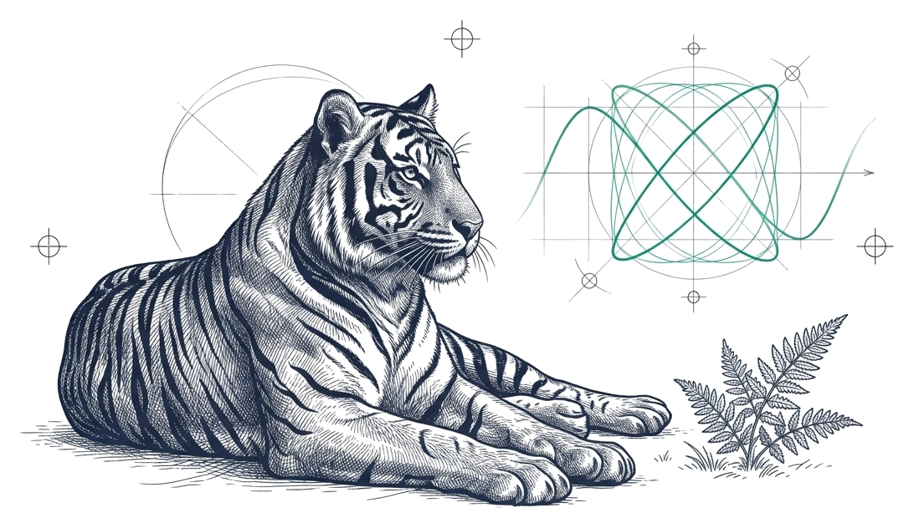

Engines Purpose-Built for Exploratory Science & Fabrication
Specialized simulation studios designed to bridge physical mathematics, hardware-in-the-loop silicon, multi-domain 3D CAD/CAM, and precision vector craft.


PhysBox: Volt
A complete browser-native EDA & mixed-signal studio — schematic capture, XSPICE/Ngspice simulation, frequency-domain analysis, and 2-layer PCB fabrication on one canvas — powered by a synchronous WebAssembly SPICE engine with real-time Hardware-In-The-Loop (HIL) silicon and live 3D electromechanical co-simulation.
- Transient, DC Bias & Bode Frequency Sweeps: Inspect live oscilloscope traces, toggle quiescent DC operating-point voltage chips on every net, run log-frequency Bode magnitude/phase sweeps with automatic −3 dB corner readouts, and catch overloaded resistors or reverse-biased LEDs with live ERC and power-rating checks.
- Single & 2-Layer PCB Milling, Stencils & Gerbers: Auto-place and drag-to-reroute footprints with copper flood and pad clearance rings. Probe a 4×4 conductive heightmap directly on copper-clad FR4 over WebSerial, drill spoilboard flip-alignment pins for double-sided boards, send SMD paste stencils to Etch, or export RS-274X Gerbers.
- Realtime HIL & Live Mesh Co-Simulation: Bridge physical ESP32/CYD microcontrollers in realtime over WebSerial, route live WebAudio mic/speaker signals through analog filters, or click Link Mesh to drive 3D NEMA 17 steppers, DC gearmotors, and acoustic speaker enclosures from real SPICE currents.

PhysBox: Mesh
Model. Simulate. Listen. Make.
A multi-domain mechanical, acoustic, and digital fabrication studio combining MuJoCo WebAssembly with Lattice cage modelling, clay sculpting, WASM OpenSCAD, and path-traced rendering. Build assemblies that collide concavely, float upright, ring at concert pitch, and export to printers, mills, lasers, and casting benches.
- True Concave Collision, Hydrostatics, Flexures & Fracture: Automatic background V-HACD decomposition means cups hold balls and funnels feed parts with zero proxy setup. Simulate container-bounded water with 3D Archimedes righting torques, compliant leaf flexures, shearable welds, Hertzian denting/shattering, and internal
M4–M16hex-nut ballast (Stand,Spin,Float). - Zero-Sample 3D Vibro-Acoustics & Luthier Tuning: Coupled Kirchhoff–Love shell + 3D FDTD cavity FIR convolution, Rayleigh–Ritz modal bars, Schelleng bowed/plucked strings (4/4 cello, lyre), and 3D TMM wind/brass waveguides — carve an f-hole or thin a spruce top and hear the resonance change live.
- Lattice CAD, Clay Sculpting, Surface Patterns & OpenSCAD: Model dimensioned hard-surface cages on a decade grid (
0.1–100 mm) with live edge rounding (E), slice sculpted clay with viewport scissors, apply 7 procedural architectural patterns (kumiko, guilloché, fluted, parquet), or write parametric OpenSCAD with auto-generated UI sliders. - Molds, Slip-Casting, Timber Joinery & Multi-Setup CAM: Generate separable silicone/rigid pour molds with sliding C-clips, plaster slip-cast molds, PVA dissolvable liners, multi-material 3MF slicer plates, mortise-and-tenon timber breakdowns, bonded brickwork, and multi-setup CNC/relief/sheet-unfold jobs — then click Add Simulation to test the machined or cast part back in physics.

PhysBox: Etch
Vector Artistry. Laser Precision. Shop-Floor Control.
A multi-sheet studio for laser cutting, fine surface engraving, fretwork, and CNC routing. Compose stacked designs across tabbed sheets with shared registration holes, derive chip-load-safe feeds and optical kerf automatically, and stream straight to GRBL, FluidNC, or grblHAL hardware over WebSerial — with Live Trim and crash-proof Run From Line recovery.
- Multi-Sheet Layered Jobs & One-Click Suite Handoffs: Build multi-layer shadowboxes and enclosures across a tabbed sheet strip with shared stock, cross-sheet copy/paste, and aligned registration pin holes. Unfolded panels from Mesh and solder-paste stencils from Volt land directly in your open Etch tab.
- Procedural Ornaments, Lace Fills & Variable-Width Brushes: Generate flowing botanical vines, guilloché rosettes, radial mandalas, fretwork lace, paint-bucket texture fills, DXF imports/exports, and hand-smoothed calligraphic strokes — plus non-destructive layer eraser masks.
- Derived Feeds, Spoilboard Surfacing & Run-From Recovery: Derives router chiploads and laser energy-per-mm automatically, runs Material Test Grids and spoilboard facing passes, probes 3×3 bed heightmaps, survives browser reloads mid-job, and previews & resumes any stopped cut from an exact G-code line.